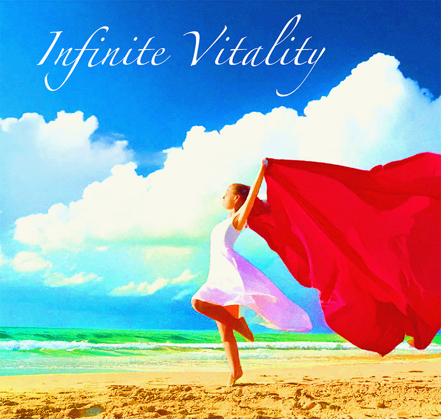
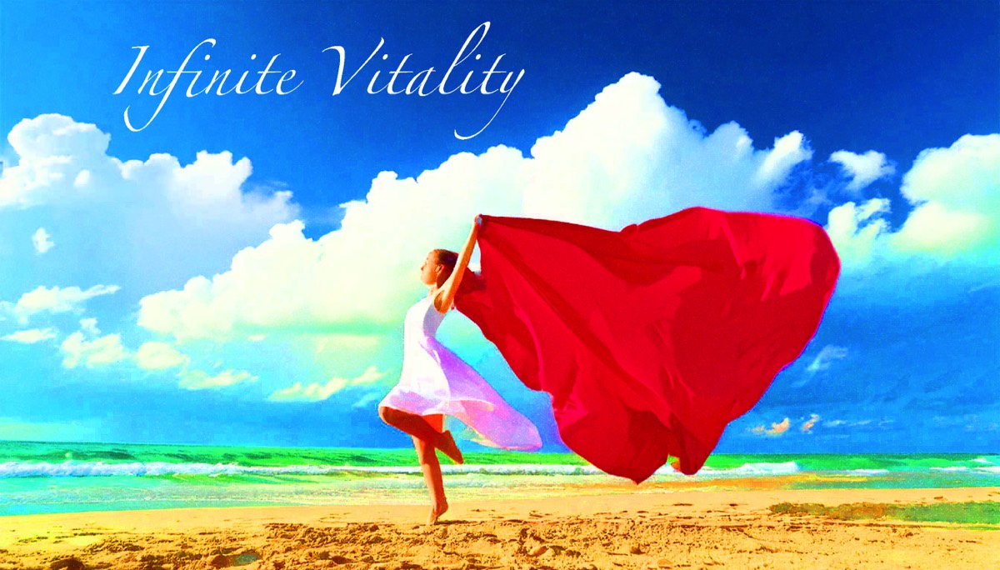
Located at the SOMA-Loft above the Red Cow in Madrona
Dr. William E. Leigh III DAOM AEMP
1423 34th Ave, Suite B
Seattle WA 98122

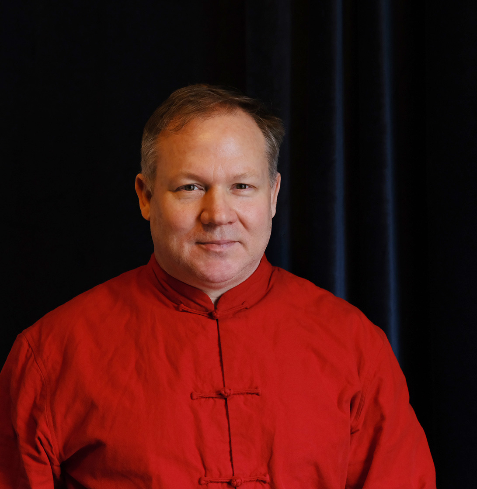
Dr William E. Leigh III DAOM AEMP
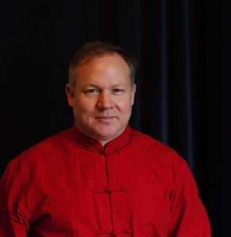
We possess an innate ability to live a life of peace, harmony and vibrant expression. At our essence, our spirit is boundless, free from limitations and conflict, transcending the boundaries of our everyday understanding.
Yet, our physical bodies, personalities, and self identities we form often reflect a narrower perspective, shaped by the constraints we place upon ourselves. It’s easy to fall into discomfort, whether through acute injury, chronic trauma, or a disconnect from the deep wisdom within us.
I practice holistic embodied medicine, harmonizing Eastern and Western traditions. The modalities I practice work together and the overall effect is greater than any individual session. My work is dedicated to relieving the root causes of pain and discomfort, while nurturing overall health, balance and vitality. Through an integrated approach, I guide my patients toward profound personal transformation—one that often surpasses even their own expectations.
Links:
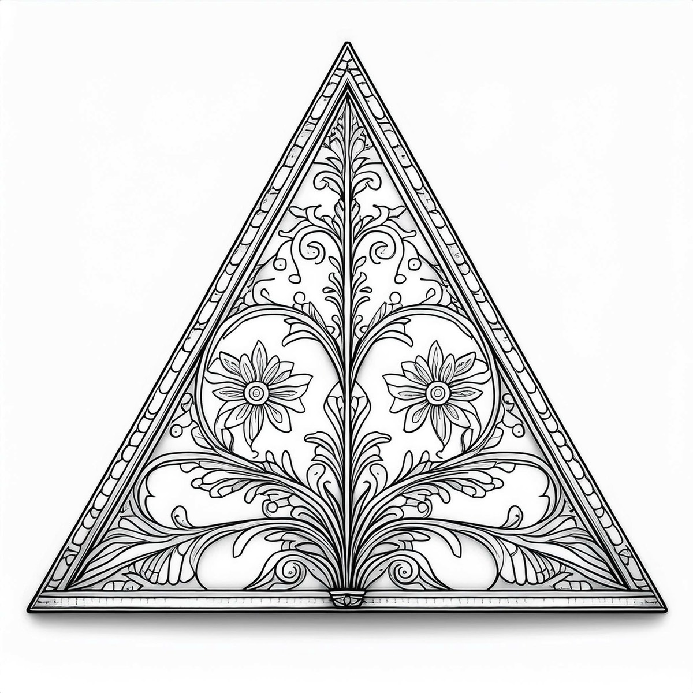
Biodynamic Acupuncture
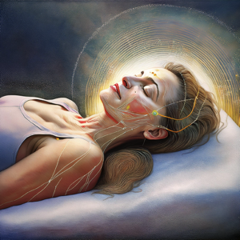
Biodynamic Acupuncture is a holistic therapy that integrates Traditional Chinese Medicine, hands-on Craniosacral Therapy, and the energetic awareness of Qi Gong. Guided by a belief in the body's innate intelligence, this modality works by finding, amplifying, and directing your own vitality to restore balance on a structural, fluid, and energetic level.
Links:

Craniosacral Therapy
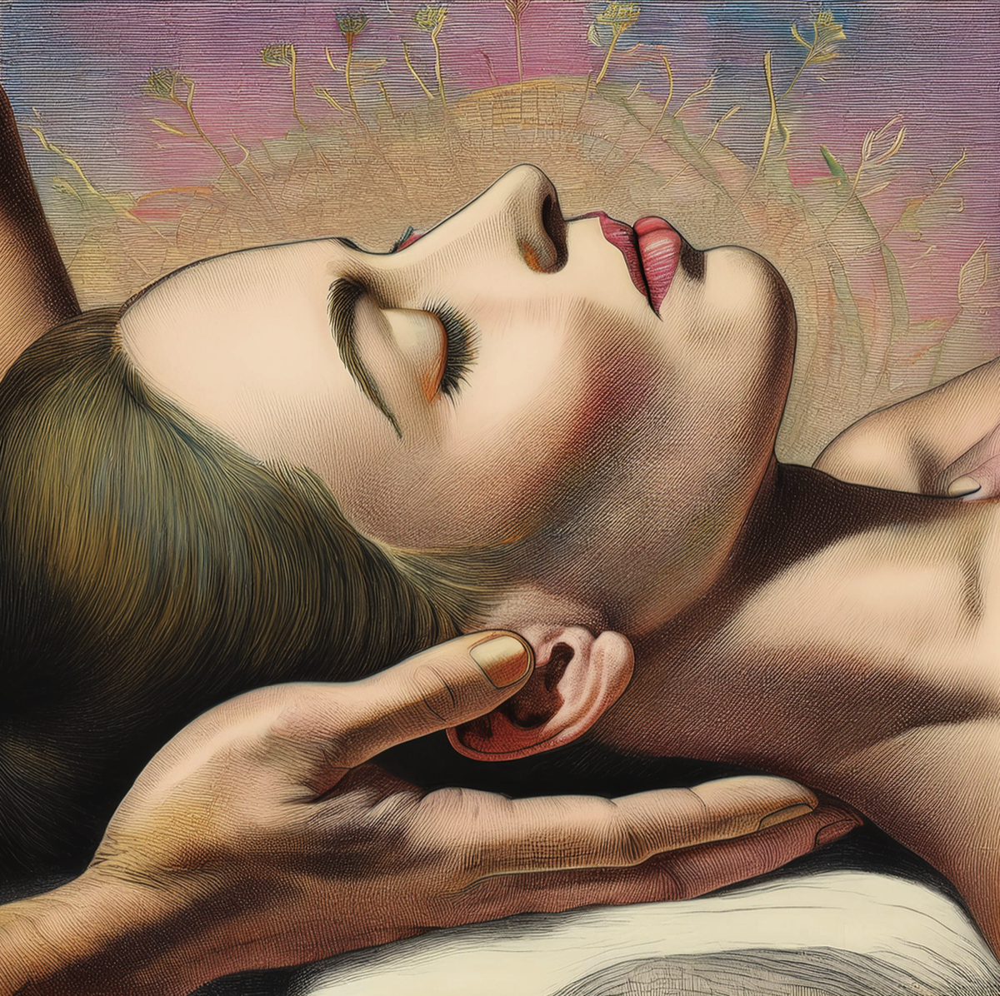
Craniosacral therapy (CST) is a gentle, hands-on treatment that focuses on the craniosacral system, including the membranes and fluid surrounding the brain and spinal cord. Using light touch, the therapist works to enhance the flow of cerebrospinal fluid, releasing tension and supporting the body’s natural healing. Dr. Leigh has reimagined traditional CST by integrating the principles of Chinese medicine while honoring osteopathic techniques. CST emphasizes the body’s inherent healing intelligence, unblocking and balancing the tides and meridians for optimal health. No physical acupuncture needles are used in this session.
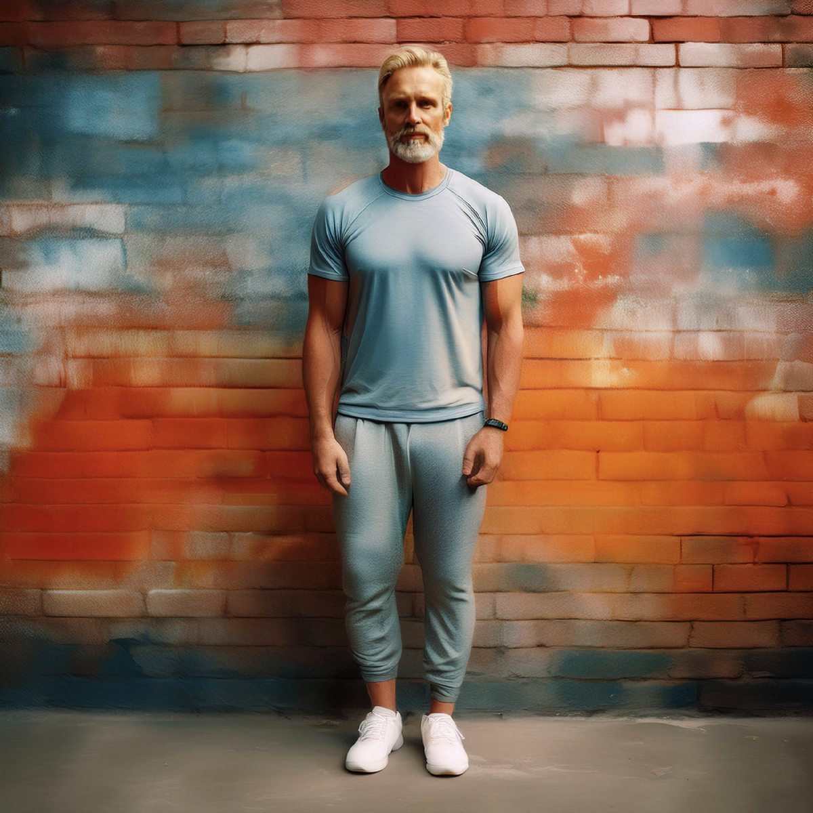
SOMA Structural Integration
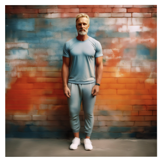
SOMA Structural Integration is a 12 session bodywork protocol that focuses on the fascia surrounding the muscles and bones. Using deep pressure and precise movements, this modality releases tension, improves posture and realigns the musculoskeletal system with the forces of gravity. Over a series of sessions, it restores balance, relieves chronic pain, and enhances overall physical function. As we achieve greater balance and ease in our posture, we awaken a deeper connection to ourselves, embodying the harmony between body and movement.
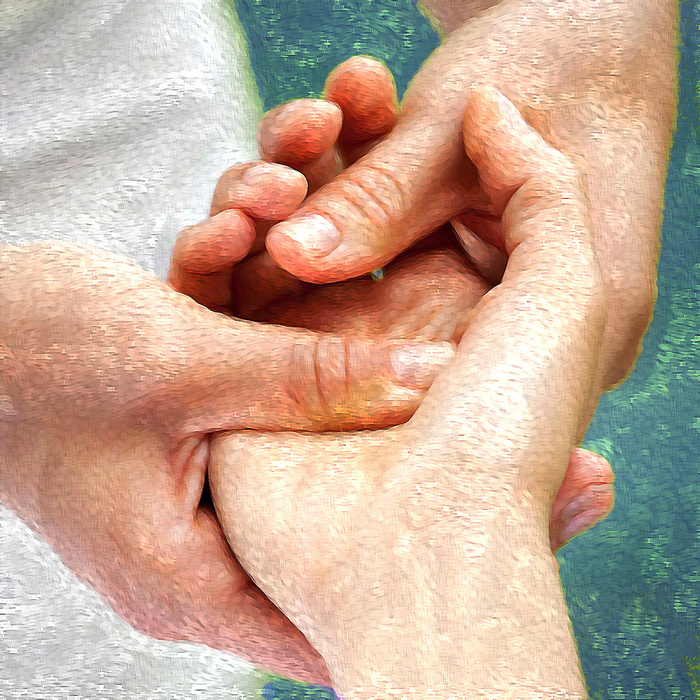
Theurapeutic Bodywork
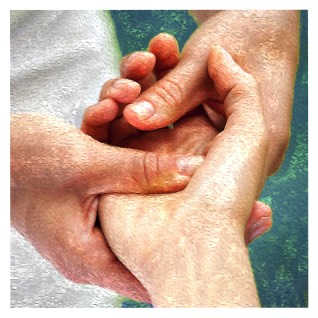
A Therapeutic Bodywork session is designed to relieve pain and discomfort caused by both acute injuries and chronic imbalances. With 15 years of experience, Dr. Leigh has successfully treated complex conditions such as headaches, carpal tunnel syndrome, and back pain. Structural Medicine combines a variety of techniques, including Tui-na, Thai bodywork, myofacial release, visceral manipulation, acupuncture, and craniosacral therapy. This holistic approach not only targets the area of discomfort but also works to realign and optimize the body’s overall physiology for lasting healing and balance.
Located at the SOMA-Loft above the Red Cow in Madrona
Dr. William E. Leigh III DAOM AEMP
1423 34th Ave, Suite B
Seattle WA 98122